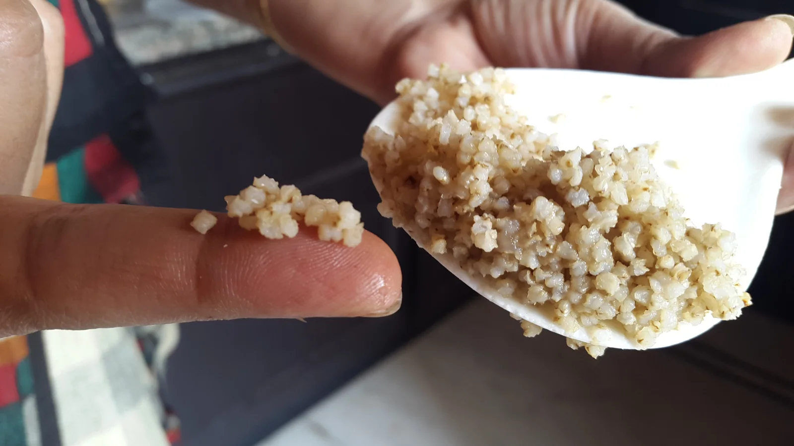
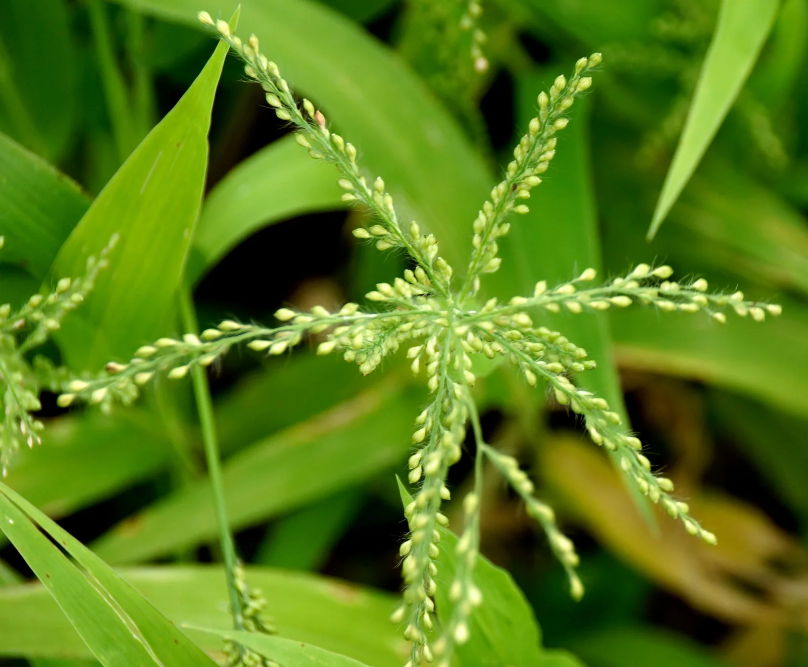
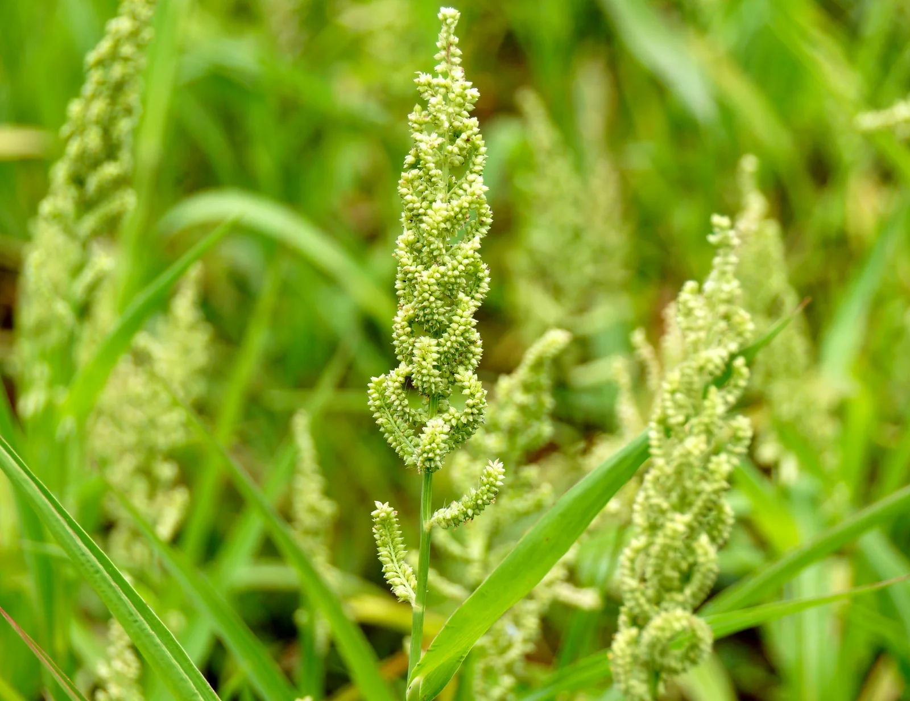
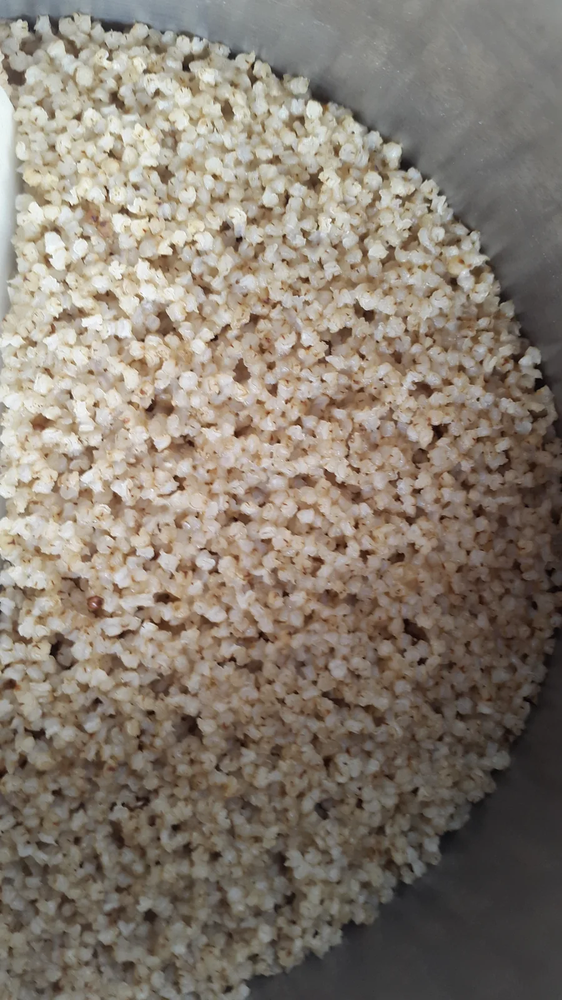
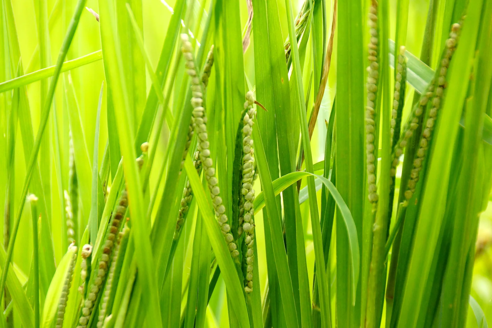
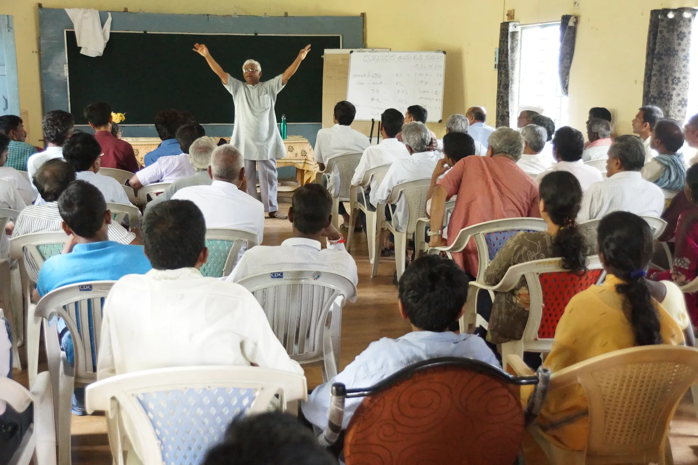
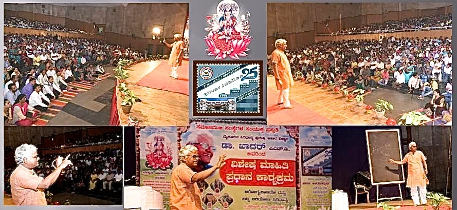
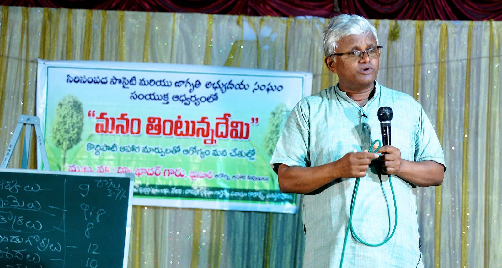

The glory of Siri Dhanya... The golden millets
MILLET ZONE's ‘SIRI DHANYA MILLETS’ are highly effective in controlling Diabetes, Rheumatism, Hypertension, IBS, Thyroid problems, Pancreas, Brain, Liver & spleen related diseases, various poisonous fevers, Gangrene, convulsions, Asthma, problems of male & female reproductive systems etc.
For all the age groups, Millet Zone's SIRI DHANYA MILLETS will give great health. Much younger children may be given liquid broth of selected millets.
Compared to Rice, you need only 60-70% of that quantity of millet grains, when you cook 'Millet Rice'.
Riboflavin in Millets is needed for energy metabolism, building tissue and help maintain good vision.
Niacin gives great cardiovascular health. Thiamin is needed for energy metabolism and the proper functioning of the nervous system.
Magnesium in millets can help reduce migraines and heart attacks.
For BETTER HEALTH, CONSUME MILLET ZONE MILLETS :
‘SIRI DHANYA’ can be used to make ‘Rice’, Idly, Pongal, Upma, Biriyani, Pulav, Dosa, Set Dosa, Roti, Bisibilla Bath, porridge, organic jaggery oriented sweets etc. The ‘Rice’ of millets can be eaten with all curries, chutneys, Sambar etc as a meal.
These ‘SIRI DHANYA’ need to be soaked for minimum 3-4 hours before cooking .(6 - 8 hrs is great for our 'Unpolished' Grains) Then they can be cooked just like Rice(Chaval) at 1:2 proportion with water in a cooker. But to retain best nutrition, you are advised for 'open cooking', that too in Terracotta pots. But, before cooking, While washing grains, do not squeeze the grains. ( It results in Stickiness of Rice)
Eat at the least one full meal with ‘SIRI DHANYA’ everyday. Diabetics and patients of various diseases may induct these grains in breakfast as well all the meals for great results. Eat Siri Dhanya foods for 4-6 months regularly, walk 75 minutes a day and check HbA1c values to evaluate the efficiency of Siri Dhanya .
For best nutrition, use MILLET ZONE UNPLOISHED and traditionally dehulled and cleaned millets grain only .
Use one ‘SIRI DHANYA’ for one meal. Do not mix different Millets at a time and cook. No fumigants and no chemicals should be used on them. (Other Millet sellers use machine polished grains with fumigants. Their Kodo millet looks weird and straw colored. You can not compare their quality with Millet Zone Siri Dhanya MILLETS)
When we eat Millet Zone's ‘SIRI DHANYA MILLETS’ regularly, our health and the health of our family & village/city populations get far better.Our resources like land, water, natural manure will be used in an efficient manner and every nation will grow in to a healthy and wealthy nation.
Millet Zone 's Siri Dhanya - WORLD CLASS FOOD
Today mankind is affected by diseases like Constipation, IBS, Diabetes, Thyroids, Hypertension, obesity, Cancer, respiratory, digestion related, Rheumatism, skin diseases, Heart and Kidney diseases etc.
In the olden days, only people above 45 years age were affected, but today most of these diseases are affecting young children, youth and older people alike. High costs of medication, surgeries and maintenance is unavoidable and yet, they are forced to live like ‘chronic patients’.
The right answer to all these maladies is ‘SIRI DHANYA’ or ‘Ancient Millets’. Until 1960-70s our elders had been eating them and they were able to protect from most of the diseases.
Ancient Millets are the first crops cultivated by people across the world ever since humans started farming. They have been a part of the staple diet of communities in hills, plains, forests, grasslands, and by the sea.
The Fiber content in MILLET ZONE's five 'Siridhanya MILLETS' is 8 to 12.5%. Due to this, these foods release Glucose for 5 to 7 hours continuously, that too slowly and in small quantities in to our blood stream. Thus they keep a person energetic all the day. They also contain good amounts of Proteins, minerals, Calcium, Phosphorous, Potassium, Iron, Magnesium, Zinc, Manganese and vitamins like Riboflavin, Thiamin and Niacin and also essential amino and fatty acids and vitamin E.



Dietary fibre is mainly needed to keep the digestive system healthy. It also contributes to other processes, such as stabilising glucose and cholesterol levels. In countries with traditionally high-fibre diets, diseases such as bowel cancer, diabetes and coronary heart disease are much less common.
Phosphorus in Millets helps with fat metabolism, body tissue repair and creating energy.
Look Below to see how Free Flowing 'Rice' can be cooked with KODO Millet Siri Dhanya

SCIENTISTS SAY HUMANS NEED ABOUT 40 GRAMS OF DIETARY FIBRE PER DAY. BUT RICE FOODS AND HYBRID WHEAT FOODS HAVE ONLY 0.25% to 0.50% FIBER. HOW CAN WE MEET THE REQUIREMENT? OUR VEGETABLES, FRUITS AND LEAVES ARE MADE OF 80 TO 95% WATER. THEY CAN NOT SUPPLY THE REQUIRED FIBER. WE SHOULD AIM AT GETTING AT THE LEAST 25-28 GRAMS OF FIBRE FROM THE STAPLE FOOD GRAINS THAT WE USE FOR OUR CARB NEEDS. ONLY 5 Siridhanya MILLETS CAN DO THIS.

Dr. KHADER,
An inspiring Scientist, Health consutant, Environmentalist and Social worker



WHY UNPOLISHED Millets should be preferred
Eating unpolished millets is surely considered more beneficial than consuming polished millets due to several reasons:
1. Nutrient retention is better : Polishing is a process that removes the outer layer or bran of the grain, which contains a significant portion of the grain's nutrients, including dietary fiber, vitamins, minerals, and phytochemicals. Unpolished millets retain these nutrient-rich outer layers, making them a more nutritious option.
2. Dietary fiber content retained : The bran layer of millets is particularly rich in dietary fiber. By consuming unpolished millets, you retain a higher fiber content, which is essential for digestive health, maintaining satiety, and supporting overall well-being.
3. Lower glycemic index : The polishing process can increase the glycemic index of millets, causing them to be digested and absorbed more rapidly, leading to a quicker rise in blood sugar levels. Unpolished millets, on the other hand, have a lower glycemic index, which helps regulate blood sugar levels and can be beneficial for individuals with diabetes or those aiming to manage blood sugar levels.
4. Antioxidant and phytochemical content better : The outer layers of millets, which are removed during polishing, also contain various antioxidants and phytochemicals that have potential health benefits.
These compounds can help protect against oxidative stress, inflammation, and certain chronic diseases.
Polished grains also contain unwanted rubber and plastic particles and nanoparticles which come from abrasives used for polishing
Though polished millets are still available at most of the super bazars and outlets, nutritional value and can be part of a cause for concern.
Consuming unpolished millets provides a higher concentration of nutrients, including dietary fiber and phytochemicals, offering greater health benefits.
When choosing millets, opt for unpolished and whole grain varieties whenever possible. Look for labels indicating "whole grain" or "unpolished" to ensure you are selecting the most nutritious options, like MILLET ZONE grains.
In summary, consuming unpolished millets is generally more beneficial than polished millets because they retain higher levels of dietary fiber, essential nutrients, and phytochemicals. Including unpolished millets in your diet can contribute to better overall nutrition and potentially provide additional health benefits.
SIRILOKAM MILLET ZONE works very hard to provide you cleanest, organic, unpolished and de-husked, ready-to-cook millet grains to give you best results.
WHY DIETARY FIBER IN UNPOLISHED Millets IS IMPORTANT
☘️At first glance, a dry millet grain appears innocent. But nature has designed it for survival and with optimum Fiber. It is designed to with stand insect activity and get stored for several seasons, if required. The 6 to 10 hour soak changes everything.
During those hours, water activates the millet’s dormant enzymes. The enzyme inhibitors are neutralized. The tough, insoluble fiber (cellulose and hemicellulose) begins to hydrate and soften, becoming a welcoming substrate for your gut bacteria.
The carbohydrate needs to be separated from the Fiber while cooking and this is made possible only through proper pre-soaking for optimum duration, One hour more or less is not a strict rule here.
But the real magic happens in your colon. Once you eat properly soaked and cooked millets, the now-accessible fiber arrives at your large intestine. Your gut has 40 to 300 trillions of gut bacteria that ferment this pre-treated fiber into Short-Chain Fatty Acids (SCFA) —primarily butyrate, acetate, and propionate.
Butyrate fuels your colon cells, repairs leaky gut, and suppresses inflammation.
Propionate travels to your liver to lower cholesterol and stabilize blood sugar.
Acetate feeds your muscles and brain, regulating appetite.
With the pre-soak, 5 Siridhanya millets become a powerful prebiotic—food for your gut army. This SCFA production is directly linked to lower rates of colorectal cancer, type 2 diabetes, obesity, and inflammatory bowel disease. YOU ARE SURELY BENEFITTED.
Content captured 25 October 2026. Reorganized for reading; purchase-related material excluded.